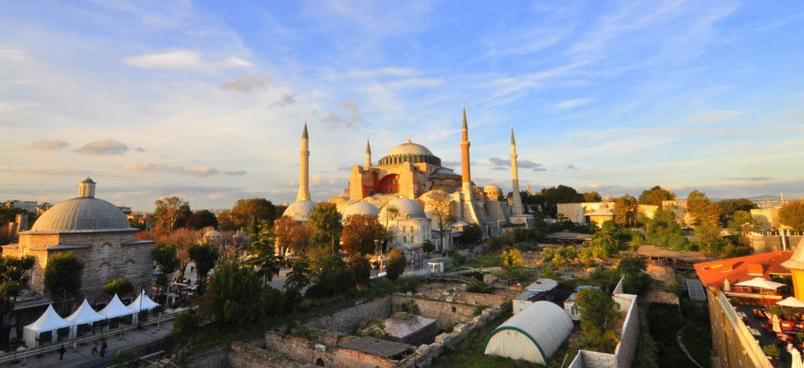

Man-made infrastructure is characterized as a human-created landscape capable of offering amenities to meet human requirements and aesthetics. These surroundings are intended to create a platform for people to work, live, educate others, and have fun. Our list of said World's Man-Made Wonders includes a wide range of architectural structures, including buildings, monuments, sculptures, pyramids, and bridges such as the Sydney Opera House and the Tower of Pisa.
The term "Great" could be an understatement. The Great Wall of China, one of several world's largest infrastructure projects, is usually thought to be around 5,500 miles (8,850 km) long; nevertheless, a disputed Chinese study claims the length is 13,170 miles (21,200 km). Work began in the 7th century BCE and continued for more than two millennia. Although it is referred to as a "wall," the structure is really made up of two parallel walls that run in lengthy stretches. Furthermore, watchtowers and barracks dot the barrier. The wall, on the other hand, proved ineffective. Despite its intention to repel invasions and attacks, the wall mostly failed to provide genuine security. Scholars have pointed out that it was primarily used for "political propaganda."
Chichén Itza was a Mayan metropolis upon Mexico's Yucatan Peninsula that prospered in the ninth and tenth centuries CE. The Mayan tribe Itza, who have been highly influenced by the Toltecs, built a variety of important monuments, including temples. Amongst the most noteworthy is the stepped pyramid El Castillo ("The Castle"), which rises 79 feet (24 meters) above the Main Plaza. The structure contains 365 steps, which reflect the number of days in a solar year, and is a testament to the Mayans' astrological abilities. At the spring and fall equinoxes, the setting light casts shadows on the pyramid, creating an illusion of a serpent sliding down the north staircase; at the foot is a stone snake head. However, life there was not all labor and technology. The largest tlachtli (a sort of athletic field) in the Americas can be found in Chichén Itza. On the field, the locals engaged in a pre-Columbian Mesoamerican ritual ball game.

Petra, Jordan's ancient city, is set in a secluded valley surrounded by sandstone rocks and cliffs. It was said to be one of the locations where Moses smote a rock and water poured forth. Later, the Nabataeans, an Arab tribe, made it their capital, and everything thrived during this period, becoming a significant commerce hub, particularly for spices. Ancient Nabataeans were skilled carvers who carved buildings, temples, and tombs into the sandstone, which changed color with the changing light. They also built a water system that allowed for beautiful gardens and farms. Petra allegedly had such a populace approximately 30,000 people at its peak. However, when trade routes changed, the city began to collapse. A severe earthquake in 363 CE exacerbated the situation, and after another tremor struck in 551, Petra was eventually abandoned. Despite being unearthed in 1912, it was mostly overlooked by archeologists until the late twentieth century, and many doubts regarding the city remained unknown.
In 1911, Hiram Bingham discovered an Incan site in Cuzco, Peru, presuming it to be Vilcabamba, a secret Incan citadel used during the 16th-century struggle against Spanish authority. Although that notion was eventually refuted, the purpose of Machu Picchu keeps scientists baffled. It was the home of the "Virgins of the Sun," females who lived in convents under chastity vows. Others say it was a pilgrimage destination, while still others claim it was a royal retreat. What is known is that Machu Picchu is one of the few great pre-Columbian monuments that have been discovered almost completely intact. Despite its remoteness high in the Andes, it has agricultural terraces, plazas, residential areas, and temples.
The Emperor Vespasian ordered the construction of the Colosseum in Rome in the first century. The amphitheater is indeed a feat of engineering, measuring 620 by 513 feet (189 by 156 meters) and featuring a complicated vault system. It could accommodate 50,000 spectators who came to enjoy a variety of activities. Colosseum bouts became perhaps the most famous, but men battling animals was also widespread. In addition, water was occasionally poured into the Colosseum to simulate naval battles. The claim that Christians were murdered there, namely by being thrown to lions, is, however, debatable. Around 500,000 people died in the Colosseum, according to some estimates. Furthermore, so many animals were trapped and subsequently slaughtered there that several species are said to have become extinct.
This memorial complex in Agra, India, is considered one of the world's most famous structures and is considered to be the best example of Mughal architecture. Emperor Shah Jahn established it to memorialize his wife Mumtz Maal ("Chosen One of the Palace"), who died in 1631 while giving birth to their 14th child. The structure, which includes a massive park with a reflecting pool, took around 22 years and 20,000 laborers to build. The mausoleum is composed of white marble with semi-precious stones arranged in geometric and floral designs. It has a magnificent center dome flanked by four lesser domes. According to certain accounts, Shah Jahn desired his own tomb built of black marble. However, he was deposed by one of his sons before any work began.
Tower of Pisa is more appropriately known as the bell tower, or campanile. The Pisa tower is one of four towers that comprise the Campo dei Miracoli or Piazza dei Miracoli cathedral complex in Pisa, Italy. The cathedral, or Duomo di Pisa, was the first structure built in Campo dei Miracoli in Pisa. It stands on a white marble pavement and is an exceptional example of Romanesque architecture. Pisa's Piazza dei Miracoli is Italy's most opulent collection of Romanesque architecture. The cathedral, with its oddly Islamic dome and matching domed baptistery, rises from an emerald green lawn and is faced in gray-and-white striped marble and bristling with columns and arches.
The Sydney Opera House is an opera house in Port Jackson, New South Wales, Australia. The Sydney Opera House is a multi-venue performing arts center located in Sydney, Australia. It is frequently recognized as one of the world's most renowned and distinctive structures, as well as a masterwork of twentieth-century architecture, due to its unique arrangement of a sequence of shimmering white sail-shaped shells as its roof structure.
St. Basil's Cathedral is Moscow's most famous architectural masterpiece. It is the most iconic Russian structure, also known as "Pokrovsky Cathedral" or "The Cathedral of Intercession of the Virgin by the Moat." This Cathedral symbolizes to Russians what the Eiffel Tower represents to the French: an honored emblem of their history, present, and future. The cathedral is located in Red Square, directly across from the Ivory Gate Chapel. The history of St. Basil's Cathedral began in 1555, by order of Ivan IV "Ivan the Terrible", to commemorate the conquest of Kazan, the Mongol Empire's last surviving hold on European territory.
The Eiffel Tower, commonly known as the Tour Eiffel, is in itself a Parisian icon that is also a scientific marvel in the annals of building construction. When the French government was planning the International Exposition of 1889 to commemorate the centennial of the French Revolution, a design competition for a suitable monument was organized. More than a hundred ideas were submitted, and the Centennial Committee chose the design of famed bridge architect Gustave Eiffel. Eiffel's proposal of a 300-metre tower made nearly completely of open-lattice wrought iron astonished, skepticism, and some aesthetic resistance. When built, the tower served as the exposition's main entrance.

For 2,000 years, the Igorots high rice fields have followed the curves of the mountains. The fruit of knowledge carried down from generation to generation, as well as the expression of religious traditions and a delicate social balance, have all contributed to the creation of such a landscape with immense beauty that represents humankind's harmony with the environment. The Rice Terraces of the Philippine Cordilleras are an amazing example of an evolving, living cultural landscape that can be traced back to pre-colonial Philippines.
The terraces are in isolated sections of the Philippine Cordillera mountain range on the northern island of Luzon in the Philippine archipelago. While the historical terraces occupy a large area, the inscribed property is made up of five clusters of the most preserved and spectacular terraces, which are spread throughout four municipalities. They are all descended from the Ifugao ethnic group, a small society that has lived in these highlands for thousands of years.
Burj Khalifa, sometimes written Khalfah, has become a mixed-use skyscraper in Dubai, United Arab Emirates, that is the world's tallest building according to all three of the basic criteria used to evaluate such structures. Burj Khalifa (" Khalifa Tower''), known simply as Burj Dubai during construction, was formally named after the ruler of the neighboring emirate of Abu Dhabi, Sheikh Khalifa ibn Zayed Al Nahyan. Although the skyscraper was formally inaugurated on January 4, 2010, the inside was not finished at that time. This tower, which was built to host a combination of commercial, residential, and hospitality activities but whose planned height was a tightly kept secret during its construction, was completed at 162 floors and a height of 2,717 feet. Skidmore, Owings & Merrill, a Chicago-based architecture company, constructed it. Adrian Smith worked as an architect, while William F. Baker worked as a structural engineer.
St. Peter's Basilica is a Renaissance-style basilica situated within Vatican City. As per mythology, the basilica was built upon the burial site of St. Peter, one of Jesus' twelve disciples and the first Bishop of Rome. To retain this tradition, Popes are now buried within the church. It was built between 1506 and 1626 to replace the Old St. Peter's Basilica and is considered one of Christendom's holy places. This was created by the finest Great Masters of the time, including Donato Bramante, Michelangelo, Carlo Maderno, and Gian Lorenzo Bernini. Today, the cathedral is a landmark of Renaissance architecture as well as an important pilgrimage destination; it is now a papal basilica rather than a cathedral because it is not the seat of a bishop. The Arch Basilica of St. John Lateran is Rome's cathedral church.
The Giza Pyramids, expected to last forever, have done exactly that. The massive tombs were built around 4,500 years ago and are remains of Egypt's Old Kingdom era. Egypt's pharaohs intended to become gods after death. To prepare for the next world, they built temples to the gods and gigantic pyramid tombs for themselves, which were loaded with everything a monarch would need to lead and maintain himself in the next world.
Approximately 2550 B.C., Pharaoh Khufu launched the first Giza pyramid project. His Great Pyramid is the tallest structure in Giza, rising 481 feet (147 meters) above the plateau. Its estimated 2.3 million stone blocks weigh 2.5 to 15 tons each. Pharaoh Khafre, Khufu's son, erected the second pyramid at Giza in 2520 B.C. The Sphinx, a mystery limestone monument with the body of a lion and the head of a pharaoh, was also part of his necropolis. The Sphinx may serve as a guard for the complete burial complex of the king. The third and smallest of the Giza Pyramids is significantly smaller than the previous two. This was built in 2490 B.C. by Pharaoh Menkaure and featured a far more sophisticated funerary temple. Each colossal pyramid is only one component of a bigger complex that also includes a palace, temples, solar boat pits, and other features.
The Hagia Sophia is one massive iconic landmark in Istanbul, Turkey, that was erected over 1,500 years ago as a Christian church. The Hagia Sophia, like the Eiffel Tower in Paris or the Parthenon in Athens, is a long-lasting icon of the global metropolis. However, as noteworthy as the edifice is in and of itself, its position in the history of Istanbul and, indeed, the globe is similarly significant, touching on issues of international politics, religion, art, and architecture.
The Hagia Sophia (Ayasofya in Turkish) was constructed as a basilica for the Greek Orthodox Christian Church. However, its role has evolved multiple times over the years. The Hagia Sophia anchors Istanbul's Old Metropolis and has acted as both a beacon for both Orthodox Christians and Muslims for centuries, as its significance has varied with the prevailing culture in the Turkish city. Istanbul is located on both sides of the Bosporus Strait, a waterway that connects Europe and Asia. Thus, the Turkish city of approximately 15 million people is located on both continents.
@ 2022 Silawan, John Kenneth C. | Introduction to Computing Batch 2 | Website Project | Beautiful Wonders of The World | No Copyright Infringement Intended - All rights reserve to the Righful Owners